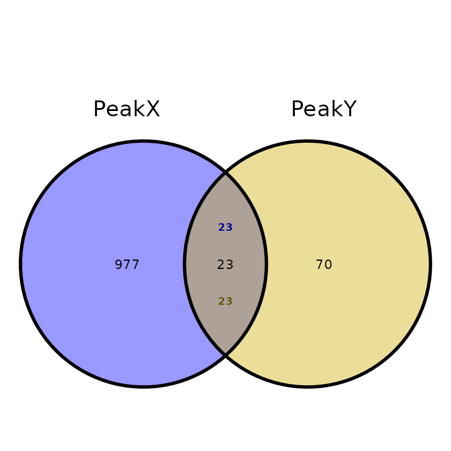
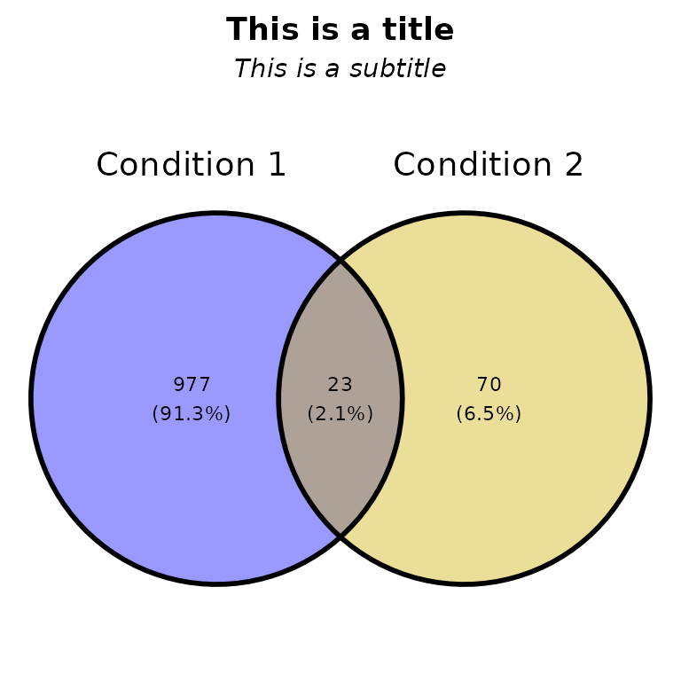
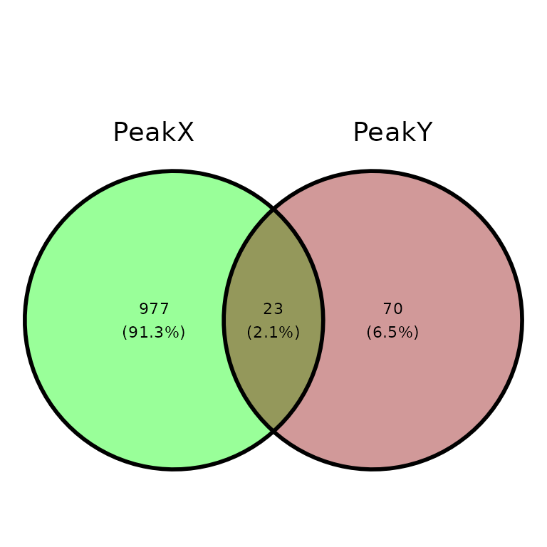
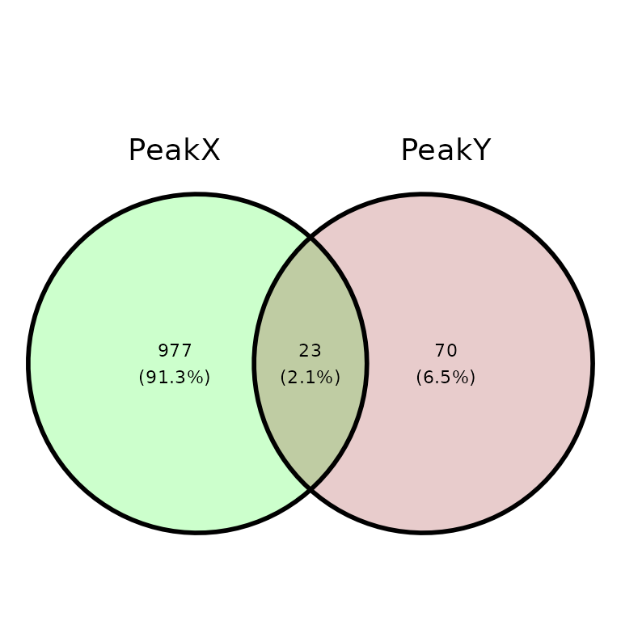
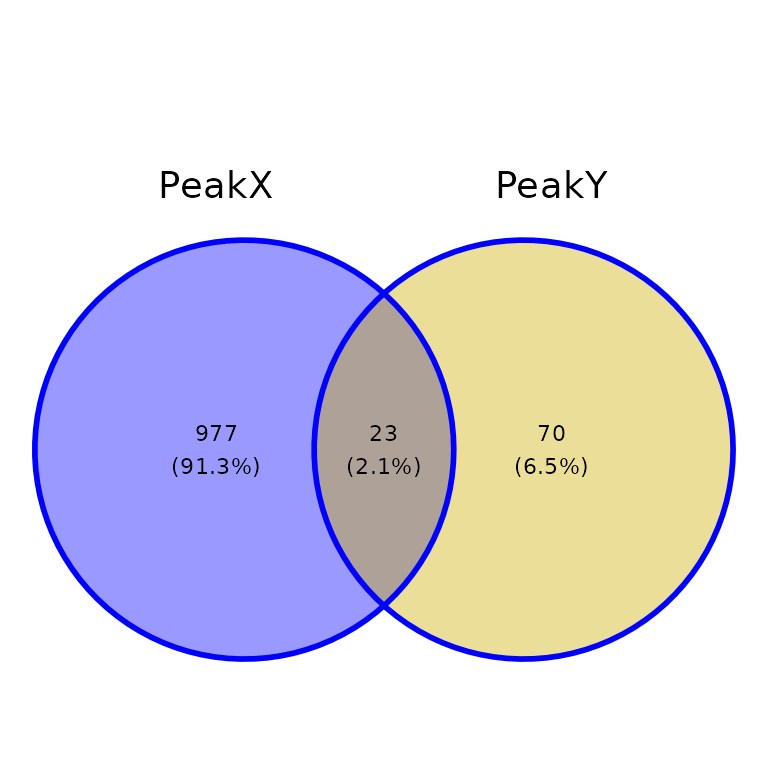
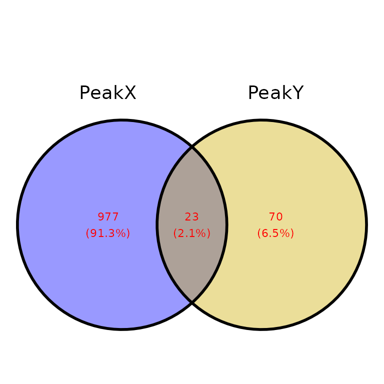

Last updated: 2022-06-02
Run ggVennPeaks()
ggVennPeaks() draws an Venn diagram plot with the intersections between different sets of peaks using the function getVennCounts() (which calls ChIPpeakAnno::makeVennDiagram()) and the ggvenn package.
Look at the ggvenn package documentation.
Look at the makeVennDiagram() function documentation.
Required input
As input, ggVennPeaks() takes a named list of data frames with the columns seqnames, start and end.
# read the peak annotation into a list
peak_list <- list.files("../testdata", "peak", full.names = T, recursive = T) %>%
purrr::discard(~stringr::str_detect(string = .x, pattern = "bed")) %>%
purrr::set_names(c("PeakX", "PeakY")) %>%
purrr::map(~read.delim(.x))
peak_list[[1]][1:5, 1:7]## seqnames start end width strand peakID annotation
## 1 chr7 3664442 3664743 302 * peak_2428 Promoter
## 2 chr8 83199578 83200817 1240 * peak_2684 Intron
## 3 chr13 20147802 20148111 310 * peak_696 Intron
## 4 chr4 56639205 56639610 406 * peak_1896 Distal Intergenic
## 5 chr18 61614281 61614892 612 * peak_1373 Distal Intergenic
# Change strand value of some regions
peak_list[[1]][10:30,]$strand = "+"
peak_list[[1]][50:80,]$strand = "-"
peak_list[[1]][90:100,]$strand = "."
peak_list[[2]][10:30,]$strand = "+"
peak_list[[2]][50:80,]$strand = "-"
getVennCounts()
getVennCounts() calls ChIPpeakAnno::makeVennDiagram(), retrieves the Venn counts (number of overlaps between different sets of peaks) and builds a matrix of the peaks present in each set.
venn_counts <- getVennCounts(peaks = peak_list)
venn_counts$vennCounts
# PeakX PeakY Counts
# [1,] 0 0 0
# [2,] 0 1 70
# [3,] 1 0 977
# [4,] 1 1 23
# attr(,"class")
# [1] "VennCounts"
venn_counts$matrix[1:5,]
# peak PeakX PeakY
# peak1 0 1
# peak2 0 1
# peak3 0 1
# peak4 0 1
# peak5 0 1ggVennPeaks() calls the function getVennCounts() and builds the Venn diagram using the peak matrix and the ggvenn package.
Unexpected intersections
As mentioned, ChIPpeakAnno::makeVennDiagram() is called inside getVennCounts(). This function may have a unexpected outputs when considering the number of overlaps to build the intersection between different sets of regions. Considering the following example:
- We have two sets of regions named A and B: A has 4 regions, 3 of which overlap with regions in B; and B has 6 regions, 5 of which overlap with regions in A.
- In the case we consider the 5 regions from B that overlap with regions in A, the size of the resulting intersection (5) would be greater than the total size of A (4).
- To prevent that, the number of overlaps considered to build the intersection is the lowest possible. In our case, this is 2.
- Hence, with
ggVennCounts()we would get 1 unique region from A, one unique region from B and 2 intersections. The sum of any of them is not the total size of A or B.

Default run
ggVennPeaks(peak_list)True overlaps
By default, the intersection of two sets of peaks is smaller than expected by looking at one of the sets. Setting true_overlaps = TRUE will write the number of overlapping regions for each set of peaks (only when two sets are intersected)
ggVennPeaks(peak_list, true_overlaps = T)
Customize plot
Set names
ggVennPeaks(peak_list, peak_names = c("Condition 1", "Condition 2"))Title and subtitle
ggVennPeaks(peak_list, peak_names = c("Condition 1", "Condition 2"),
title = "This is a title", subtitle = "This is a subtitle")
Remove percentage
ggVennPeaks(peak_list, percent = F)Set colors
ggVennPeaks(peak_list, in_fill = c("Green", "Darkred"))
ggVennPeaks(peak_list, in_fill = c("Green", "Darkred"), alpha = .2)
Other colors
ggVennPeaks(peak_list, out_color = "blue")
ggVennPeaks(peak_list, text_color = "red")
ggVennPeaks(peak_list, name_color = c("red", "blue"))Further costumization
Since ggVennPeaks() outputs a ggvenn-based Venn diagram and ggvenn is based in ggplot2, it can be further customized with scales or theme.